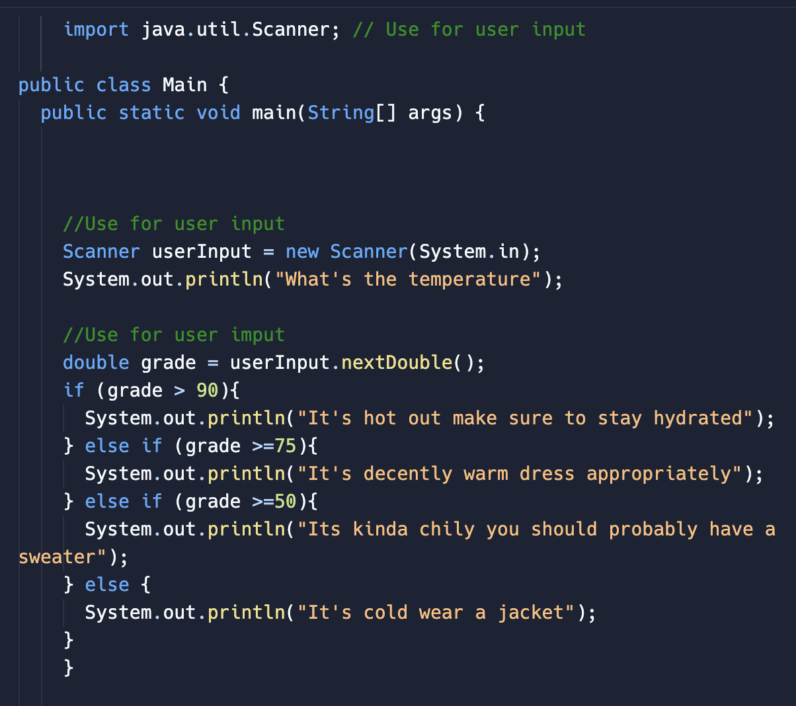

May 2024 - Aug 2024
La Grange, IL
● Independently tutored middle and high school students in Java, teaching introductory concepts such as variables, conditionals,
control structures, and arrays
● Created curriculum, activities, and materials based on my high school and college classes and my own personal projects

⬆ One of the starter programs I had them complete!